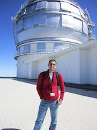
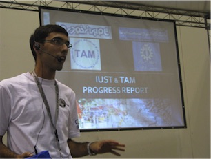
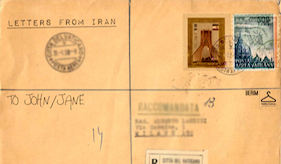

From late 2012 I became interested in Machine Learning and statistical Learning methods. I attended Machine Learning Summer School in 2012 with a grant from ESPRC which was the starting point for me to become interested in Machine Learning. I also completed to successfull intenrships at Amazon in Seattle and Berlin as Machine Learning Scientist. Both projects were under supervision of Ralf Herbrich and mentored by Dominique Perrault-Joncas and Matthias Seeger respectively. Currently I am a PhD student at Max Planck Inst. Empricial Inference department under supervision of Prof. Dr. Bernhard Schölkpf.
From mid-2008 until late 2014 I contributed to several robotics projects. These contributions started with participation in International RoboCup competitions in 2008 and 2009 and later as techincal commitee member in these competitions until 2012. During this period I contributed to USARSim project, a high fidelity simulation system for robotic systems. Within the same period I also worked on several research projects at Iran University of Science and technology. Later at University of Edinburgh I joined RAD group under supervision of Dr. Ramamoorthy. In this group I developed a where I contributed to Edinferno team participating in RoboCup standard platform league. I also finished my final project with Dr. Ramamoorthy.

During late 2014 Nima Dehghani and I worked on a series of projects focused on internet social media and its influence. The projects were in form of an online art work and focused mainly on political issues related Iran. These projectes recieved overshelming support and positive feed back and noticed by several news agencies such as BBC. Netformance is the initiative under which all these projects have been completed.